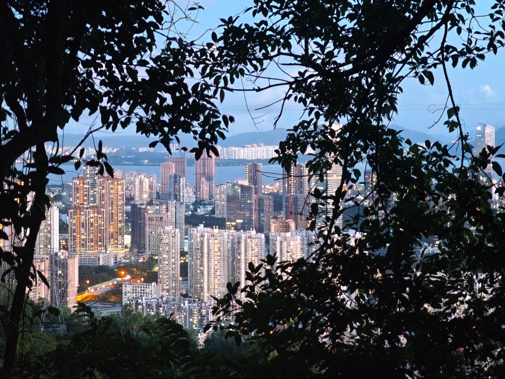
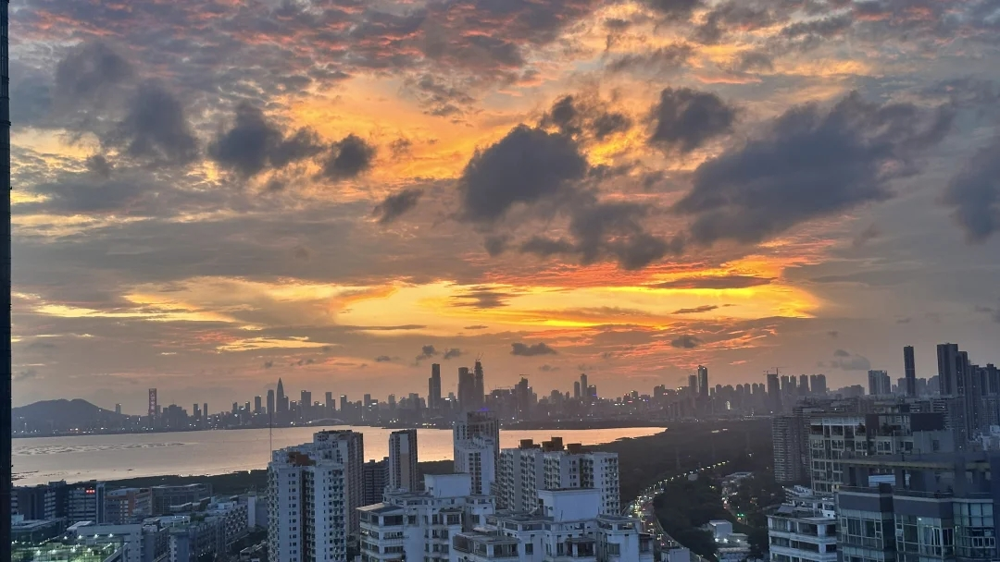
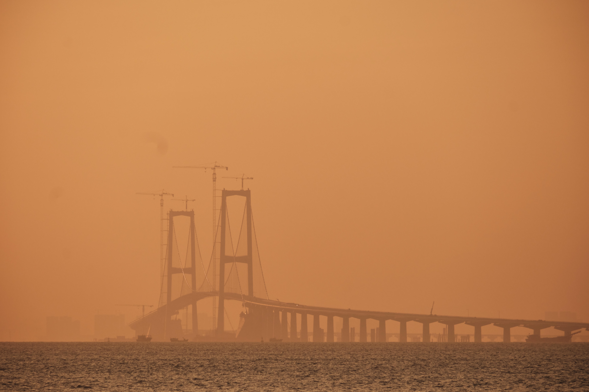

05:38 · 日出前二十二分钟
追·光对谈
Conversations on Waiting for Light
八位摄影者，关于一道光的不同等法。
向下
过去几周，我们找到八位拍光的人，问他们同一类问题：一道光，你等不等，又等多久？
得到的答案，从「两个小时」到「完全不等」都有。
05:42
Calm Breeze
八位里，规划最精确的一位。提前二十分钟，不多，也不少。
问拍日落时会看天气、等待时机吗？
CALM BREEZE
我拍的是日出。每天先查日出时间，去晚了太阳出来就不好看了。
日出前的蓝调最好看。先找好地点、定好时间，提前大约二十分钟到就行，日出的过程其实不长。
日出前的蓝调最好看。
06:10
Tmj
AUDIO TRANSCRIPT · 录音转写 · 无影像授权
也有人，连推荐都不想要。
问我们想帮助用户寻找附近出片地点、推荐时机和机位。你最需要什么？
TMJ
我可能和大多数人不一样。我做专业练习，不太依赖推荐。通常到了一个空间以后，先观察和感受，再决定怎么拍。
问如果一定有一款产品辅助专业摄影者呢？
如果能看到那个地方当下的真实状况会很有帮助，像 Google Maps 实景，但最好更实时。
产品把天气、光线、云量、现场画面提供给我，最后怎么拍还是让我判断。连续变化的数据，比一句“推荐拍摄”更有价值。
连续变化的数据，比一句“推荐拍摄”更有价值。
10:20
深圳豪宅小谭
AUDIO TRANSCRIPT · 录音转写 · 无影像授权
前面都在说「我怎么看光」。也有人，想到的是「大家」。
问如果有一款帮助摄影的小程序，你希望它有什么？
深圳豪宅小谭
可以同步上传照片、参与话题、提供打卡点。大家把地点贡献出来，平台可以慢慢收集起来。
「大家把地点贡献出来」——这句话，我们记住了。
14:30
崔维斯
聊完「到了再看」的人，崔维斯想得更远——还没到，就想看见。
问帮助摄影师寻找阳光机位的产品，你希望它有什么？
崔维斯
希望可以模拟机位的实时取景，最好有 VR。还没到现场，就能看看建筑、太阳方向和遮挡。
如果能调日期和时间，看不同时间的光落在哪里，会更有用。普通地图只告诉我地点，VR 或全景能让我判断现场是否开阔、怎么移动、某个角度能不能拍。
如果能调日期和时间，看不同时间的光落在哪里，会更有用。

17:48
龍兒悠長假期 Xuan long vacation
有人提前规划，有人到场再看。也有人，完全不等。
问拍日落会提前规划吗？
龍兒悠長假期
比较随意，主要凭运气。旅行或散步时刚好遇到好看的，就顺手拍。
问如果产品提醒你，附近半小时后可能有晚霞呢？
地点就在附近、不用做太多准备的话可能会去。最好打开就知道附近哪里好看、现在过去还来不来得及。信息太复杂反而不会看。
信息太复杂，反而不会看。
18:05
凯利斯映像
太阳往下走。等一个小时的人，看的不是钟，是云。
问什么天气适合拍日落？
凯利斯映像
会提前看天气，通常等一个小时，也会观察太阳颜色。多云不一定是坏天气，完全没云反而单调。有些云，夕阳颜色才有层次。
最好能看到云量、云层位置、太阳附近是否被厚云挡住。用户最终想知道的是今天值不值得去拍。
多云不一定是坏天气，完全没云反而单调。
REEL 01
18:23
zhao-lives
天色越晚，等的人越耐心。zhao-lives 会提前一两个小时，蹲在草坪上。
问拍日落会提前看天气吗？
ZHAO-LIVES
会。有夕阳的时候提前去草坪蹲机位。为了最佳晚霞一般等一到两个小时，因为天空一直变，不知道最好看的颜色在哪一分钟。要隔几分钟拍一次，覆盖不同时间段。
太阳落下去也不能马上走，真正好看的晚霞有时会晚一点出现。
问如果产品提醒你「进入金色时刻」「十分钟后可能有晚霞高峰」呢？
会有帮助，但要结合当天变化，不只是固定日落时间。
真正好看的晚霞，有时会晚一点出现。
REEL 01
18:41
Peng
最后一位，等的不是日落，是一场雨的结束。
问你会选择什么天气拍晚霞？
PENG
晴天，也会关注台风或雨天前后。那时空气更通透，拍到晚霞的概率更高。一般提前三十分钟去蹲守。等自己看到天空漂亮再出发，有时已经来不及。
天气预报告诉我下不下雨，摄影的人更想知道雨停后天空会不会通透、晚霞概率高不高。
问所以你期待的，是一个摄影视角的天气预报？
对，不只告诉我天气，而是告诉我这种天气对拍摄意味着什么。
等自己看到天空漂亮再出发，有时已经来不及。
18:55
旁听席
访谈之外，还有更多人把拍到的光发给我们。他们没有坐下来接受采访，但这些照片和视频，也是答案的一部分。

聊完这八位摄影者，我们发现：每个人等待一道光的方式，都不一样。
有人提前二十分钟等蓝调，有人蹲一两个小时等晚霞；也有人不打算等，只想在天变好的那一刻，被提醒一次。
天气预报只说晴或雨。拍光的人关心的，是云、通透度、光的方向，和那个可能只有几分钟的窗口。
他们提的要求，其实都不多
- 01
云量、云层的位置、太阳附近有没有被厚云挡住——说到底，是想知道今天值不值得去拍。
凯利斯映像 - 02
还没到现场，就先看见建筑、太阳的方向和遮挡。
崔维斯 - 03
金色时刻、晚霞高峰来临之前，被提醒一次。
zhao-lives - 04
打开就知道附近哪里好看，现在过去还来不来得及。
龍兒悠長假期 - 05
真实现场和连续变化的数据给我，判断留给我自己。
Tmj - 06
不只告诉我天气，告诉我这种天气对拍摄意味着什么。
Peng
六句话，指向同一个缺口：出门前那几分钟，没有人替你看天。追光，就是从这个缺口里长出来的。
所以，追光不替任何人按快门。它只做一件事——在恰当的时候，告诉你：
光快到了。现在出发，还来得及。
访谈到这里结束，追光才刚刚开始。
追光 · 对谈 · 2026
本页全部影像均已获作者授权 · 署名见各图注